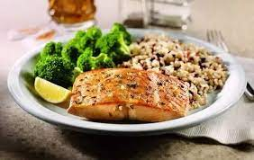

Eat Smart. Live Well.
Discover nutritious, quick, and tasty recipes designed for a healthier you. Whether you're a beginner or a seasoned cook, our meals make healthy eating simple and enjoyable!

Quick Healthy Meal Ideas
Watch our nutritionist prepare three healthy meals in under 15 minutes each.
Why Eat Healthy?
- Increased energy levels throughout the day
- Better concentration and productivity at work/school
- Improved mood and mental health
- Stronger immune system to fight illnesses
- Long-term disease prevention and wellness
- Maintain a healthy weight naturally
- Better sleep quality and recovery
External Resources
To learn more about healthy eating and research, check out Harvard's Nutrition Source, It’s a trusted website with helpful, science-based advice.